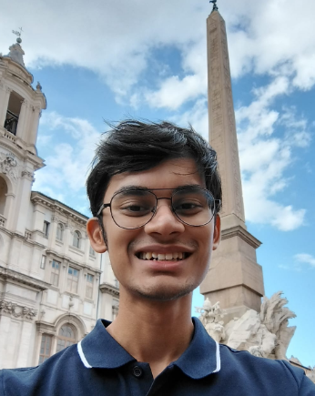
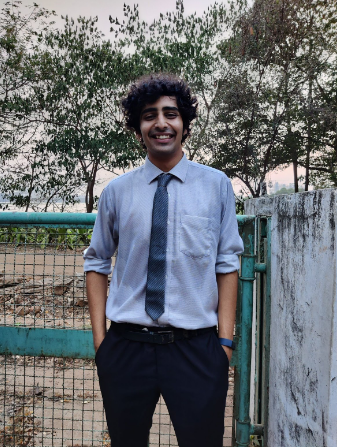
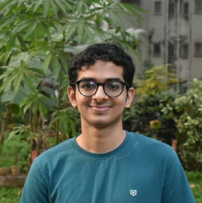
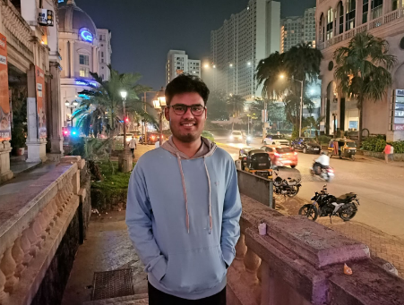

Institute Journalism Awards 2021-22
Insight is proud to announce the winners of the Institute Journalism Awards 2021-22!
The Institute Journalism Awards, namely, the Institute Journalism Colour and the Institute
Journalism Special Mentions seeks to recognise exemplary contributions to journalism in the
institute. This year, we have Shaswat Gupta and Pranav
Kasat as recipients of the Institute
Journalism Colour Awards; and Mithilesh Vaidya, Soham
Purohit and Gaurav Badre for the
Institute Journalism Special Mentions. They have all worked tirelessly to bring the best of
their abilities to the table and take to greater heights the culture of journalism in the
institute. We’re very proud of them and wish them the heartiest congratulations! Dive in to
learn more about all their motivation to join Insight, their journey, and fun memories from
their tenure!
Shaswat Gupta: Institute Journalism Colour
Q. What attracted you towards Insight?
A. Writing, for me, is a form of artistic expression. There’s beauty in being able to create a symphony with words–to paint a picture of your internal thought and offer it to fellow readers and see your ideas flame to contagion. Such power to fundamentally alter someone's perspective, to reorient belief systems, to galvanize action with a well-written, targeted story. But this power is not the only thing that makes writing so seductive. Your emotions and personality color your tone and word choice. Your way of thinking dictates your narrative and argument structure. Is there a better way to peek inside and gather insight? “To understand the world, read. To understand yourself, write.” Conversations can be earth-shattering experiences. The excitement in seeing the evolution of two-people’s understanding of a topic just by offering a slice of their perspectives to each other is a gift. Where else, other than Insight, can you find people who resonate with your philosophical sophistication? Where else do you find people hungry to listen to your ideas and generous to offer their own?
Q. Favorite piece you've worked on for Insight.
A. The Virtual Labs article, by far! The sheer challenge of handling a sensitive topic, ensuring an unbiased expression of student views, faculty perspectives and admin policies through interviews and discussions was very engaging and meaningful. Four of us worked for 4 months to create this piece.
Q. One key thing you'll take away from your tenure.
A. Coming up with a first-draft feels very challenging. But, the real value-addition happens during repeated iterations. Each contention makes your argument stronger, each suggestion opens a new dimension, each comment highlights your blind spot. That’s why working in a team is important, that’s why we welcome diversity in thoughts and experiences.
Q. What's your favourite memory related to your tenure (could be a funny incident or anything :P)?
A. The handing over treat is my most cherished memory. Most of our tenure was online, and surprisingly, I met many of my fellow editors in-person the first time at the end of our tenure, during our handing over treat. We got drunk, danced like crazy apes and had the time of our lives.
Q. How much did you enjoy on-ground work versus writing/editing for journalism?
A. On-ground work is essential to the journalist experience. It’s a crucial part of the job.That said, I am a sucker for writing. Give me a topic to read and write about, I’ll be the happiest person in Earth. But, I do enjoy talking to professors and alumni.
Q. Overall, how has your experience been working in Insight?
A. Better than anything I could have asked for. The editorial board is a group of incredibly capable and helpful people. Getting to know them and working side-by-side will certainly be a cherished memory. Looking back, it was probably an exception among the slew of “less-than-reasonable”-decisions in my four years at IIT Bombay :p
Pranav Kasat: Institute Journalism Colour
Q. What attracted you towards Insight?
A. One of the major reasons was that the work associated with Insight has a direct and visible impact. Further, I was excited by the brainstorming of new ideas and having discussions within the editorial board.
Q. Favorite piece you've worked on for Insight
A. Brain Drain
Q. One key thing you'll take away from your tenure
A. Quality > Quantity
Q.What's your favourite memory related to your tenure (could be a funny incident or anything :P)?
A. The treat in Lonavala was amazing! AmMo's board gathered together in-person for the first time :)
Q. Overall, how has your experience been working in Insight?
A. My experience has been amazing. Insight provided me a great platform to cover different topics and pen down views on it. There was a lot to learn from the fruitful discussions during the ed board meetings. Since my tenure as ed board member was during the online sems, it also helped me stay connected with all the happenings in insti :P
Mithilesh Vaidya: Institute Journalism Special Mention
Q. What attracted you towards Insight?
A. As someone who had never taken up a PoR before, I was keen to be a part of some student body before I graduate. I have always enjoyed writing and so a board member of Insight was the perfect opportunity to channel my interest towards something more interesting. After having spent a year at home due to COVID, the possibility of meeting new people as part of the board was also enticing. I spoke to a few current and ex-editors of Insight; each one spoke positively of their experience. Hence the decision to apply for a board member of Insight
Q. Favorite piece you've worked on for Insight
A. I enjoyed working on an article which described the plight of international students at IITB. I got to interact with the international student community and connect with them so as to understand the problems they face on campus. Subsequent research on how top universities welcome international students and cater to their problems was very interesting. The sheer depth and breadth of analysis we carried out to understand the root cause of the problems was exciting.
Q. One key thing you'll take away from your tenure
A. Since I mostly worked on long articles, the biggest takeaway from my tenure was the ability to think about a problem from all perspectives. I realised how similar it is to research. Formulating a hypothesis, testing it with research/surveys and presenting the conclusions in a clear concise manner are very important skills, which I honed as an editor of Insight. Equally important are the people I came across and the friendships I got to forge with some amazing people!
Q. What's your favourite memory related to your tenure (could be a funny incident or anything :P)?
A. I enjoyed a few informal sessions and conversations I had with the team, especially with my ChiefEds :D Too embarassed to mention them here :P
Q. Overall, how has your experience been working in Insight?
A. With placements, prep for further studies and my DDP, I was a little anxious about burdening myself with too much work during my final year. In hindsight, it was a great decision! As a maggu throughout my first four years, I learnt so much about our Insti culture as part of Insight. I made new friends, got to work on articles addressing real issues and present them to the Insti junta. The brainstorming sessions with the board were stimulating; it was great to hear about so many diverse perspectives on any particular issue. If only my tenure would have been completely offline; can’t imagine how much more fun that would’ve been!
Soham Purohit: Institute Journalism Special Mention
Q. What attracted you towards Insight?
A. I was always an avid reader, which led to an inclination for creative writing. I also liked the concept of journalism a lot, and liked to stay updated on current affairs from around the world. Insight lay at the intersection of all of these interests. Through groundworks, I realised the freedom and flexibility given to editors to pursue articles as desired, which was another major factor in pushing me to join Insight.
Q. Favorite piece you've worked on for Insight
A. By far it is the Election Special Edition. The interviews which revealed controversial information, the late night discussions on how to tackle the flaws in the current system of elections, attending soapboxes and questioning the candidates made me feel like I was a part of something big. This article covered all bases and gave me the complete "investigative journalist" experience.
Q. One key thing you'll take away from your tenure
A. Gossip
Q. What's your favourite memory related to your tenure (could be a funny incident or anything :P)?
A. One time I was sent to report about a fire in the new CSE building. On reaching there, I found out that the fire had already been put out by firetrucks. Nonetheless, I posed and took photos in front of the building, making me feel like the "Disaster Girl" from the memes
How much did you enjoy on-ground work versus writing/editing for journalism?
A. Most of my tenure was online, so very little of the work I did was on ground unfortunately. Based on whatever little on ground work I did, I feel that an offline tenure would have been really fun and interesting.
Q. Overall, how has your experience been working in Insight?
A. Good üëç
Gaurav Badre: Institute Journalism Special Mention
Q. What attracted you to joining IITBBC?
A. My interest in filmmaking, creating video content, and admiration for transparent journalism pushed me towards applying for the convener position at IITBBC. IITBBC seemed to provide me best of both worlds. It also provided me with the freedom to work on whatever topic I might find interesting. The student-centric projects were very much fun to work on. Hence, subsequently, I applied for the OC position as well.
Q. Favorite piece you've worked on for IITBBC
A. Without a doubt, the Campus Reboot series.
It was a 2 part documentary series revolving around the phase-wise reboot amidst the
Covid-19 pandemic. It was much needed at that time given the confusion amongst students
about what exactly was the rationale behind various rules and policies, how exactly the
admin and STF were working, and did they have student interest in mind. We also covered the
other side of the story, students' perspectives, and opinions. This project had a lot of
components to it. The joy of taking a step closer to providing a transparent platform for
communication between both parties was something that I hold dear.
Q. Key things you'll take away from your tenure
A. Firstly, people. All the people that I interacted with as a part of IITBBC– alums,
seniors, peers, juniors, conveners, etc– all had something to learn from. This network is
something I really want to preserve.
Secondly, the power of perspectives. Everything is going on for some reason, but all we lack
are keen eyes and perspectives. Working with IITBBC, all of whose projects revolve around
people, I developed an appreciation for the beauty of all the different perspectives that
are present.
These are some of the key takeaways from my tenure.
Q. What's your favourite memory related to your tenure (could be a funny incident or anything :P)?
A. My favorite memory would be the freshers’ intro 2020. It was something very early in my convener tenure and something very fun. Everything was online, and we were, for the first time, making an online freshie intro. We were very excited. The online interviews with the freshers were very fun, everyone was so cheerful and amazing. We interviewed from the morning till late at night. During post-production, we sat entire days on Zoom and pulled a couple of all-nighters, most part of which, apart from editing, was just going through as many memes as we could xd. It was all fun. We made a lot of changes to each draft and arrived at the final video. Our efforts paid off when this video became the fastest IITBBC video to reach 1Mn views. The entire experience was amazing, fun, and very satisfying!
Q.How were your experiences with on-ground work?
A. My most memorable on-ground experiences are during the shoot of the SOAPBOX and the documentary on PAF. Half of my OC tenure was, sadly, online, so these offline projects had a lot of new things to teach. During SOAPBOXes, we had to set up cameras at multiple places to capture multiple angles which meant we had to keep a track of which camera is running out of power so that we can replace the battery and put the drained-out battery on charge. This was a big pain. But we eventually got used to it. Also, we had to deal with faulty and inadequate inventory, which was a result of it simply lying in insti for 2 long Covid years. Challenges apart, it was pure joy to interact with people face-to-face and capture activities on ground zero.
Q. Overall, how has your experience been working with IITBBC?
A. Being a part of IITBBC is one of my most memorable experiences in insti life. There was a lot of learning for me. I would do a lot of things that I otherwise wouldn’t do, being an introvert. All projects, be it offline or online, documentaries or SOAPBOXes, and each stage in them, be it writing or editing, interviewing or managing people, had something to teach. The entire experience of my journalistic endeavors with IITBBC was very fruitful and something that I would cherish for life.